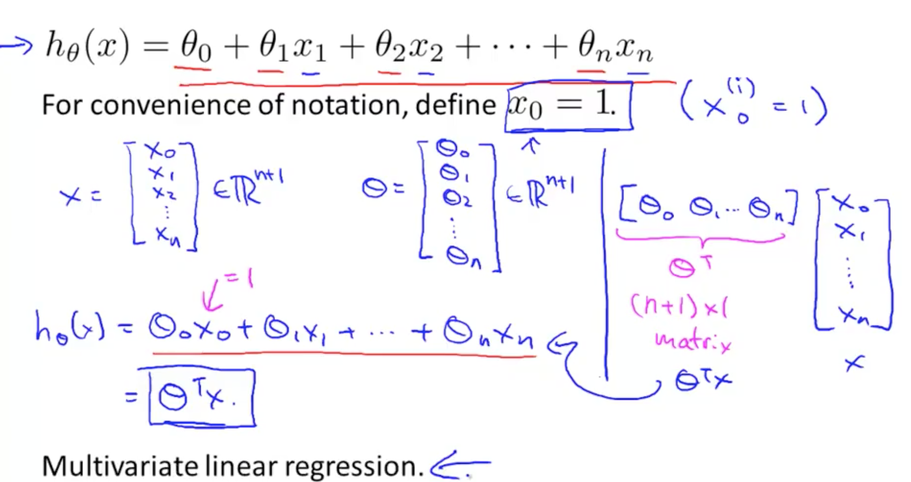
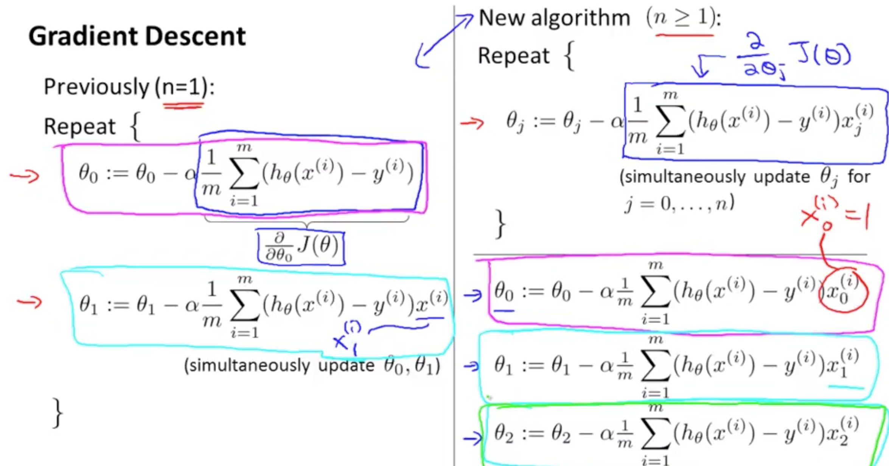

Welcome to machine learning
머신러닝이란? 이미 실생활에 많이 사용되고 있습니다. 구글이나 빙을 통해 검색을 할때 머신러닝 소프트웨어는 어떤순서로 리스팅을 할것인가를 나타냅니다.
Facebook 혹은 Apple의 포토앱에서는 여러분 친구들의 사진을 인식하는데 이또한 머신러닝입니다. 이메일을 읽거나 스팸필터를 사용하는것또한 머신러닝입니다.
컴퓨터가 명시적으로 프로그램되지않아도 알수있도록 하는 분야가 있습니다. 한 예를 보면 저는 로봇이 집을 청소하는 프로젝트를 연구하고있습니다
어떻게 작동을 할까요? 아마도 로봇이 당신이 청소하는것을 보고 그것을 배우는 것입니다. 당신이 어떤 물건을 집는지 보고 어디다가 놓는지를 보고 그와 비슷한것을 당신이 없을때 할것입니다.
이런것들이 저에게 흥미를 일으키는 이유는 바로 이것들이 AI, 혹은 인공지능 문제이기때문입니다
많은 과학자들이 이런것을 머신러닝을 통해 하는것이 최선이라고 생각하는데 이것을 neural networks라고 부릅니다.
즉, 어떻게 사람의 두뇌가 작동하는것인지를 따라하는것이지요. 저는 이런것들을 당신에게 이번 클레스에서 다룰려고합니다
그리고 실제구현하는것도요
Multivariate Linear Regression
Multiple Features
Multiple variable, multiple feature에 적용할수 있는 새롭고 더 강력한 Linear Regression에 대해 알아볼것입니다.
집의 크기 뿐만 아니라 집값을 결정할 다른 변수들이 주어졌다. 이 변수들을 이전에 말했다 시피 x1,x2,x3,x4로 하고, y는 집값을 나타내도록한다.
notation:
n = number of features (이기서는 4)
x(i) = input of ith training example. 예를들어 x^(2)는 1x4형태의 Matrix로 [1416, 3, 2, 40]을 갖음
x^(i)j = value of feature j in ith training example. x^(2)3 = 2가 될것임
Hypothesis함수를 보자.
기존에는 h(x) = theat0 + theat1x형태로 간단하였지만 n 개의 feature를 갖게될것이다.
h(x) = theat0+ theta1*x1 + theta2*x2+ theta3*x3 + theta4 *x4 (현재 4개의 Feature)
사실 x^(i)0 =1이라서 theta0 *1에서 1을 곱하는것이 생략되어있는것이다.
이것을 행렬곱으로 나타낼수 있는데, [theta0, theta1 ...] X [X0,X1, X2.... Xn] 이고 이것은
hypothesis 함수이다. 이것을 multivariable linear regression이라고 부른다.

Gradient Descent for Multiple Variables
이전 비디오에서는 linear regression with multiple feature에 대한 hypothesis함수에 대해 알아봤습니다.
이 비디오 에서는 linear regression with multiple features를 어떻게 Gradient Descent하는지에 대해 알아보겠습니다.
이 형태가 Hypothesis입니다. X0=1입니다.
Parameter는 theta0부터 thetan이 될것입니다.
cost funtion은 J(theta0...thetaN)이지만 파라미터 vector인 theta로 나타내겠습니다.
Gradient Descent는 똑같다. theta0부터 n까지 simultaneously하게 업데이트 시켜주면된다.
n >= 1에대해서는 기존에 1 parameter에서 구한 공식을 그대로 사용할것이다.
왜 업데이트 rule이 다른가를 보면, x0가 1이기때문이다.!!

Gradient Descent in Practice 1 - Feature Scaling
Gradient Descent를 할때 사용할 Pratical 한 trick을 알려줄것이다.
Feature Scaling.
Features가 비슷한 Scale일 경우 Gradient Descent를 더욱 빠르게 할수 있다.
X1 = size, X2=number of bedroom이라고하면
contour를 그러보면 긴모양이 될것이다.(왜냐면 x1은 0-2000이고, x2는 1-5이므로, 비율이 400/1이다) global minimum을 찾기위해 오래걸릴것인데,
여기서 x1=size(feet) / 2000, x2 = number of bedroom / 5 를 한다면
(2000은 size의 범위이다.)
circle모양으로 그려질것인데, (비율이 1:1로 같아지니까)
gradient descent할때 directed 한 path를 얻게된다.
정리하면, Feature Scaling은 모든 Features를 -1 <= xi <= 1로 만드는것이다.
x0=1가 이미되있다. 꼭 -1,1일 필요는 없다. 즉, xi가 각각 similar한 범위에만 있으면된다.
교수님은 -3to 3, -1/3 to 1/3이면 무난하다고 함.
maximum value로 나눴었는데, Mean normalization을 하기도한다.
Mean normalization은 Xi를 Xi - Ui로 치환하여 값의 범위 평균을 0로 만드는것이다. X0 =1이므로 X0에는 적용할필요가없음
Gradient Descent in Pratice 2 - Learning Rate
Learning Rate alpha에 대한 더욱 효율적으로 Gradient Descent하는 방법에 대해 알아볼것이다.
Gradient Descent가 제대로 동작하는지를 알아보기위해 내가 하는 방법은..
x축을 number of iteration으로 하고, y축은 J(theta)이다.
(1/x꼴로 그래프가 그려지는데, 당연하다 여러단계를 거칠수록 더 optimal minimization에 가까워진다)
J(theta)는 every iteration일때마다 줄어들어야한다.
하지만 the steps의 수에 대해서는 매우 다양하다. 30일수도 이쏙 3000일수도 있다.
자동으로 convergence test(수렴테스트) 할수있다.
gradient descent할때 J(theta)가 증가할때가 있는데 이것은 제대로 동작하지 않는것이다.
이때는 더 작은 alpha를 이용해야한다.
일반적으로 J(theta)가 증가하는 이유는,
Features and Polynomial Regression
어떤 적절한 Feature를 선택해야하는지에 대해 알아볼것이다. 또한 polynomial regression에 대해 알아볼것인데,
machinary of linear regression to fit very complicated, even very non-linear regression에 사용하도록 할것이다.
(machinary : 기계장치)
집값을 예상하는 예제를 살펴보자. 2개의 Feature가 있다고 가정하면, frontage, depth 이다.
공식은 h(x) = theta0 + theta1*frontage + theta2*depth.
주어진 Feature를 이용하는것 뿐만아니라 새로운 Feature를 만들어 낼수도 있다.
즉, Area를 나타내는 X = frontage * depth
그리고 h(x) = theta0 + theta1*X.
아마도 더 나은 결과를 줄것이다.
feature를 선택하는 것에 대한 아이디어는 polynomial regression이라고 부른다.
size에 대한 price가 이렇다고 합니다
당신이 할수 있는것중 하나는 quadratic model(2차 방정식)을 맞춰보는것입니다
즉 theta0 + theta1*x + theta2*x^2.
직선은 맞지않아보입니다. 따라서 quadratic model을 맞춰볼것입니다.
이런 모양(휘어진)으로 될것입니다.
하지만 quadratic function은 결국엔 기울기가 마이너스가 되므로 우리는 다른 형태의 polynomial model을 선택해야합니다.
Cubic Function; theta0 + theta1*x + theta2*x^2 + theta3*x^3. 기울기가 줄지않음.
간단한 알고리즘 변경을 통해 이 공식을 적용할수 있습니다.
hypothesis의 형태는
size : 1-1000
size^2 : 1-1000000
size^3 : 1-10^9
가 될것이다. 따라서 Feature Scailing(week2에서 배운)이 매우 중요하다.
또는 squre root를 선택하는것도 방법이다.
(여기서 Feature Scailing을 적용하여 hypothesis를 구하는것이 핵심)
Computing Parameters Analytically
Quiz: Linear Regression with Multiple Variables
m*(n+1) 이 X가 된다.
y는 그대로 m dimention . m*1
Octave/Matlab tutorial
Vectorization
- unvectorized implementation
prediction = 0.0
for j=1:n+1
prediction = prediction + theta(j) * x(j)
end
- vectorized implementation
prediction = theta' * x;
.* 는 element wise operation이다. 즉 matrix끼리 곱하는게 아닌
하나의 엘리먼트, 각각에 곱할수가 있다.